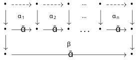

The category of sets and functions is a favourite of category theorists. Among its special features, it is the free coproduct cocompletion of the terminal category. But functions are not the only sensible mapping you can consider between sets; take, for example, partial functions. A similar free-cocompletion characterisation of the category of sets and partial functions is more elusive. One satisfying resolution comes from double categories.
For a double category, we can define its double category of families, which is its free coproduct completion. However, unlike the \(1\)-categorical case, the construction can be parameterised by certain classes of functions, giving many kinds of family construction. A specific choice of parameterisation does exhibit the double category of sets, functions and partial functions as a free coproduct completion of the terminal double category.
However, with the new understanding we can do even more. We can redefine what it means for a double category to have products via a contravariant family construction. Then, using these refined classes of products, we can define a 'double category of partial maps' as a double category with a particular class of products. A double category of partial maps then has an underlying bicategory of partial maps as in Carboni (1987).
Finally, the theory extends to (co)virtual double categories, giving a notion of product in a virtual double category and of coproduct in a covirtual double category. This generalisation is useful in (co)virtual double categories of spans and cospans, which exist for any category, not just those with pullbacks or pushouts.
This is joint work with Evan Patterson from this summer; it accompanies a talk and a forthcoming paper.
Background
The family construction
The category \(\mathbf{Set}\) of sets and functions is the free coproduct completion of the terminal category (nLab (2026)). To see the result, we can define a free coproduct completion via the family construction.
Definition 1 For a category \(\mathsf{C}\), the category of families \(\mathsf{Fam}(\mathsf{C})\) is defined as follows:
- objects \((I,x)\) are a set \(I\) with \(I\)-indexed objects \(x_i\) of \(\mathsf{C}\);
- morphisms \((f_0,f)\colon (I,x)\to (J,y)\) are a function \(f_0\colon I\to J\) with \(I\)-indexed morphisms \(f_i\colon x_i\to y_{f_0(i)}\) of \(\mathsf{C}\).
There is an inclusion \(\Delta\colon \mathsf{C}\to \mathsf{Fam}(\mathsf{C})\) given by sending objects and morphisms to the objects and morphisms indexed by the singleton set, \(1\). We then obtain the universal property: for any functor \(F\colon \mathsf{C}\to \mathsf{D}\), where \(\mathsf{D}\) has small coproducts, there exists an essentially unique coproduct-preserving functor \(\hat{F}\colon \mathsf{Fam}(\mathsf{C})\to \mathsf{D}\) such that the diagram
commutes.
Can we trace the universal property in reverse? From the family construction on a category, how do we recover the coproduct? If \(\mathsf{C}\) has coproducts, then we can define \(\Sigma:= \widehat{\mathsf{id}_{\mathsf{C}}} \colon \mathsf{Fam}(\mathsf{C})\to \mathsf{C}\). It is a fun exercise to show that a category \(\mathsf{C}\) has coproducts if and only if the inclusion \(\Delta\colon \mathsf{C}\to \mathsf{Fam}(\mathsf{C})\) admits a left adjoint, \(\Sigma\dashv \Delta\). So, starting from the family construction, we can characterise coproducts by the existence of a left adjoint.
Using the tools of category theory, there is a nice way to describe the family construction. The family construction is the free coproduct completion monad. The algebras over the monad give categories with coproducts. The unit of the monad is the inclusion of a category into the category of families, and the multiplication is taking coproducts in the category of families. If \(\mathsf{C}\) is an algebra, then the algebra laws force the algebra action, \(\Sigma\), to be isomorphic to taking coproducts in \(\mathsf{C}\). In fact, \(\mathsf{Fam}\) is what's called a lax-idempotent monad on \(\mathbf{Cat}\), which tells us that the algebra structure, if it exists, is unique up to isomorphism (see Kelly and Lack (1997)).
Families of double categories
When we start looking at higher-dimensional category theory, in particular in double categories, it is not uncommon for definitions that agree in the \(1\)-categorical case to diverge. In this case, you may want to define a coproduct as an initial cocone over a discrete diagram \(F\colon I\to \mathsf{C}\) or as a left adjoint to the inclusion \(\Delta\colon \mathsf{C}\to \mathsf{Fam}(\mathsf{C})\), depending on which is convenient.
In their seminal paper, Grandis and Paré (1999) extended the former definition to the setting of double categories. They defined what it means for a double functor \(F\colon \mathbb{I} \to \mathbb{D}\) from a small double category to have a (co)limit. In particular, when \(\mathbb{I}\) is discrete, we obtain a definition for a double (co)product.
The free completion under the Grandis-Paré coproduct may appear unsatisfying when you consider certain double categories. Specifically, taking the terminal double category, \(𝟙\), and freely adding double coproducts, we obtain the double category of sets, functions, trivial proarrows and cells. If you know some double category theory, you may have expected the answer to be \(\mathbb{S}\mathsf{pan}\), the double category of sets, functions, spans and span homomorphisms. \(\mathbb{S}\mathsf{pan}\) plays a crucial role in double category theory as exhibited, for example, in Paré (2011), where the double Yoneda embedding lands in the virtual double category of \(\mathbb{S}\mathsf{pan}\)-valued double functors.
A remedy for this problem is an idea introduced by Paré (2009) and developed by Patterson (2026). Evan defined a double family construction \(\mathbb{F}\mathsf{am}(\mathbb{D})\), the key difference being that we index the proarrows in \(\mathbb{D}\) by arbitrary spans of sets \(I\leftarrow A\rightarrow J\), and redefined a double coproduct as a lax left adjoint to the inclusion \(\Delta \colon\mathbb{D}\to \mathbb{F}\mathsf{am}(\mathbb{D})\), mirroring the \(1\)-categorical case. Restricting to identity spans recovers Grandis and Paré's definition. Furthermore, completing with respect to the new notion of coproduct gives us the desired result, \(\mathbb{F}\mathsf{am}(𝟙)\cong\mathbb{S}\mathsf{pan}\).
Virtual double categories
We are assuming the reader is familiar with category theory and knows of double categories, but may not have come across virtual double categories (VDCs). It is worth spending some time to get used to VDCs since they are becoming increasingly useful in the study of formal category theory. The idea was first introduced by Burroni (1971) as the case \(\mathrm{T}=\mathrm{fc}\) of his '\(\mathrm{T}\)-categories', where \(\mathrm{fc}\) is the free-category monad. Virtual double categories were then developed by Leinster (2004) where they are called '\(\mathrm{fc}\)-multicategories'. We will use the name and notation from Cruttwell and Shulman (2010).
One benefit of virtual double categories is that we can now capture examples such as \(\mathbb{C}\mathsf{ospan}(\mathsf{C})\), which can be defined even when \(\mathsf{C}\) does not have pushouts. For us, this means we can define products in the virtual double category \(\mathbb{C}\mathsf{ospan}(\mathsf{C})\). Later in this post, we will include an example of the dual situation: coproducts in covirtual double categories.
Before seeing a virtual double category, it is worth remembering what a double category is. A double category, \(\mathbb{D}\), is a category object internal to \(\mathbf{Cat}\). We will denote the underlying category of objects and arrows as \(\mathbb{D}_0\) and of proarrows and cells as \(\mathbb{D}_1\). Double categories have proven useful since they can package together two kinds of arrows in the same structure. For example, sets typically have functions as maps between them, and functions are very well studied. However, there are other kinds of mappings between sets such as relations, partial functions and spans. We can define the double categories \(\mathbb{P}\mathsf{ar}\) or \(\mathbb{S}\mathsf{pan}\) with functions as arrows and partial functions or spans as the proarrows. This allows us to study partial functions or spans through their relationship with functions.
The step from double categories to virtual double categories is a small one. We forget about the composition of proarrows, and to compensate we let the cells have an arbitrary composable string of proarrows as their source.
Definition 2 A virtual double category \(\mathbb{D}\) has as data:
- objects, \(x\);
- arrows, \(f\colon x\to y\);
- proarrows, \(u\colon x\proto y\);
- cells,
- arrow composition;
- cell composition

- identity arrows;
- identity cells;
subject to the axioms:
- objects and arrows form a category;
- associativity and identity axioms for cell composition.
To recover the relation to double categories, we can define notions of virtual double functors and transformations as the maps preserving the relevant structure. Then there is an inclusion (fully faithful on \(1\)-cells and \(2\)-cells) of the \(2\)-category of double categories, lax functors and transformations, into the \(2\)-category of virtual double categories, virtual functors and transformations.
As mentioned in the intro, we can define \(\mathbb{S}\mathsf{pan}(\mathsf{C})\) even when \(\mathsf{C}\) doesn't have pullbacks. First, we need to dualise our definition of a VDC to get what's called a covirtual double category (coVDC). Notice how simply reversing the arrows in a VDC will not give us back a VDC, due to the asymmetry of the multi-source and single-target of the cells. So, define a coVDC to consist of objects, arrows, proarrows and cells of the shape
Notice that coVDCs also generalise double categories by forgetting loose composition.
Now we can give a use for this abstraction, hinted at already. The following example can be found in Dawson et al. (2010), Proposition 4.3, where covirtual double categories are named oplax double categories.
Example 1 For any category \(\mathsf{C}\) define the covirtual double category \(\mathbb{S}\mathsf{pan}(\mathsf{C})\) as:
- having objects and arrows, the objects and arrows of \(\mathsf{C}\);
- having proarrows, spans of arrows of \(\mathsf{C}\), \(X\leftarrow A\rightarrow Y\);
- having cells, a collection of arrows of \(\mathsf{C}\), \(\alpha_i\colon B \to A_i\) such that the diagram
commutes.
Since we didn't need to compose spans, we never needed pullbacks. If \(\mathsf{C}\) has pullbacks, then, by the universal property, the maps \(\alpha_i\) form a cone over the pullback diagram and hence give a unique map into the pullback. Therefore, our definition and the one defined by maps into the pullback coincide.
The family construction for virtual double categories
Now that we have familiarised ourselves with virtual double categories and the family construction, we will put them together to get the family construction on VDCs. The definition will seem a little intimidating, so first let's figure out how we get there.
To come up with the definition, there's one thing we know already: we want the construction to be the same on objects and arrows as for the family construction on categories. This leaves us to decide what happens on proarrows and cells. For a double category \(\mathbb{D}\), we want to index both underlying categories, \(\mathbb{D}_0\) and \(\mathbb{D}_1\), with a discrete category. We could choose the same set \(I\) indexing both categories, giving us a diagram,
However, it makes just as much sense to index the categories by different underlying sets with functors (functions since the categories are discrete) that commute with the source and target functors,
This idea, first due to Paré (2009), is what we mean when we index by a span of sets \(I\leftarrow A \rightarrow J\). We can index cells by span morphisms. Although we don't have diagrams like the one above in virtual double categories, we can still perform a similar construction.
Definition 3 (Family construction on VDCs) For a virtual double category \(\mathbb{D}\), the (contravariant) family construction \(\DblFamOp(\mathbb{D})\) is defined as follows:
- objects, \((I,x)\), are a set \(I\) and an \(I\)-indexed family of objects in \(\mathbb{D}\);
- arrows, \((f_0,f)\colon (I,x)\to (J,y)\), are a function \(f_0\colon J \to I\) and a \(J\)-indexed family of arrows \(f_j\colon x_{f_0(j)}\to y_{j}\) in \(\mathbb{D}\);
- proarrows, \((A, p)\colon (I,x)\proto (J,y)\), are a span \(I\overset{l}{\leftarrow} A \overset{r}{\rightarrow} J\) and a span-indexed family of proarrows \(p_a\colon x_{l(a)}\proto y_{r(a)}\) in \(\mathbb{D}\);
- cells, \((\alpha_0,\alpha)\),
are a morphism of spans,
and a \((J_0\leftarrow B\rightarrow J_1)\)-indexed family of cells
in \(\mathbb{D}\).
Covariant vs contravariant
You may have noticed the arrows in the construction here are going in the opposite direction to the one you might expect. This is because we are giving the contravariant family construction, so that we can define products rather than coproducts. To define coproducts in a double category, we need to consider the covariant family construction, which generalises to covirtual double categories. To avoid getting into the weeds, we will present the contravariant version where we write \(*\) and hope the reader can dualise where necessary. To help remember the upcoming terminology, note: \(* \implies\) contravariant \(\implies\) colax-idempotent \(\implies\) right adjoint gives products, and no \(* \implies\) covariant \(\implies\) lax-idempotent \(\implies\) left adjoint gives coproducts.
We find that the double family construction here, similarly to the \(1\)-categorical case, is a (co)lax-idempotent monad. So, we get many similar results such as the family construction being a free completion and the algebra structure being unique. However, the difference from the \(1\)-categorical case is that we have many different double-categorical family monads parameterised by the definition below.
Span indexing pairs
Indexing proarrows by a span gives us a lot more freedom in what we index by. It is no longer just the indexing set that can vary, but also the functions in the legs of the span. We can notice that certain classes of these functions, for example injections, are closed under the operations which encode the family monad. So there is not just one family monad but many, depending on which class of functions we choose for the legs of the span. In particular, we have the following:
Definition 4 (Span indexing pair) A span indexing pair, \((L,R)\), is a pair of classes of functions satisfying:
- (pullback closure) if \(l,l^\prime \in L\) and \(r,r^\prime \in R\) then in the pullback square below \(f \in L\) and \(g \in R\).
-
(coproduct closure) for a collection of arrows \(p_a\colon S_a \rightarrowtail V_{r(a)}\) in \(L\) (resp. \(R\)) indexed by a function \(r\colon A\rightarrowtail J\) in \(L\) (resp. \(R\)), the copairing of arrows \[[\iota \circ p_a]_{a\in A}\colon \bigsqcup_{a\in A}S_a\rightarrowtail \bigsqcup_{j\in J}V_j\] is also in \(L\) (resp. \(R\)).
-
(unit) \(\id_{1}\colon 1 \to 1\) is in \(L\) and \(R\).
The definition reflects exactly the conditions we need for the double family construction to assemble into a monad.
Examples of span indexing pairs seem to come in two flavours: subcategories such as \(\surj\) or \(\inj\) and small examples such as the set of all maps out of the initial set, \(\varnothing\). The classes of interest are:
| class | functions |
|---|---|
| \(\all\) | all functions |
| \(\bij\) | bijections |
| \(\surj\) | surjections |
| \(\inj\) | injections |
| \(\idnt\) | identity functions |
| \(\varnothing\) | functions out of the empty set (initial) |
| \(!\) | functions into the singleton set (terminal) |
| \(\idnt_{\varnothing}\) | \(\{\id_\varnothing,\id_{1}\}\) |
| \(\idnt_{1}\) | \(\{\id_{1}\}\) |
They can be arranged into a nice diagram below.
Note that not every class can pair with every other class to form a valid span indexing pair, as together the pullback condition needs to be satisfied.
We can now define a refined family construction \(\mathbb{F}\mathsf{am}_{(L,R)}(\mathbb{D})\) by only indexing by spans with the left leg in \(L\) and right leg in \(R\).
Theorem 1 (Generalised family monads) For a span indexing pair \((L,R)\) there is a colax-idempotent pseudomonad,
given by the family construction. The unit of the pseudomonad, \(\Delta\colon \id \Rightarrow \DblFamOpLR\), is the inclusion at the singleton set, and the multiplication, \(\Sigma\colon \DblFamOpLR^2\Rightarrow \DblFamOpLR\), is taking the coproduct over the indexing sets.
Dually, for a span indexing pair \((L,R)\), there is a lax-idempotent pseudomonad, \(\DblFamLR\colon \mathbf{covDbl}\to \mathbf{covDbl}\). Both of the monads restrict to monads on the \(2\)-category of double categories. This presentation of the result gives us what we need to recover the leading example.
Example 2 A partial function is equivalently a span of functions whose left leg is an injection. Therefore,
The next section briefly explains what products we can now define in virtual double categories.
(Virtual) double products
As in the \(1\)-categorical case, we can move from the family construction to (co)products by taking adjoints to the inclusion. The bonus now is that we have many different family monads which describe different kinds of (co)products.
Definition 5 ((L,R)-products) A virtual double category \(\mathbb{D}\) has \((L,R)\)-products if the inclusion \(\Delta\colon \mathbb{D}\to \DblFamOpLR(\mathbb{D})\) has a right adjoint, \(\Pi\colon \DblFamOpLR(\mathbb{D})\to \mathbb{D}\).
In a virtual double category we can take products of objects just as in a \(1\)-category, but we can also take a product \(\Pi(A,m)\) of a family of proarrows, which is again a proarrow. We get some interesting kinds of proarrow which exhibit the universal property of a product.
Example 3 For a double category \(\mathbb{D}\) with \((\all,\all)\)-products, we call:
- a product of proarrows indexed by \([2]=[2]=[2]\) a parallel product \[u\times v \colon x\times x^\prime \proto y\times y^\prime;\]
- a product of proarrows indexed by \([1]\overset{!}{\leftarrow} [2]\overset{!}{\rightarrow} [1]\) a local product \[p\times p^\prime \colon x\proto y;\]
- a product of identity proarrows indexed by \([2]=[2]\overset{\sigma_{12}}{\to}[2]\) a braiding \[\sigma_{x} \colon x\times x \proto x\times x;\]
- a product of identity proarrows indexed by \([1]\overset{!}{\leftarrow} [2]=[2]\) a diagonal \[\delta_x\colon x\proto x\times x.\]
These examples are not exhaustive but give an idea of the different interesting structures which appear as products.
The post is getting long, so we will end by stating one benefit of our abstraction, leaving the details to the upcoming paper.
Provided the \((L,R)\)-product functor is normal (preserves identities in the proarrow direction), products can be exhibited as companions or conjoints. That is, the existence of normal \((L,R)\)-products in a double category (products where the product functor is normal) implies the existence of particular companions and conjoints. Using this idea, we can express known bicategorical structure which arises as the underlying bicategory of a double category with \((L,R)\)-products.
We can also ask if the \((L,R)\)-product functor is pseudo, that is, it preserves compositions in the proarrow direction. In this case, we say the products are \((L,R)\)-strong.
The motivating example of this idea is a double category of partial maps.
Definition 6 (Double categories of partial maps) A double category with \((\surj,\idnt)\)-strong \((\all,\surj)\)-products is called a double category of partial maps.
The definition comes from trying to mimic the structure of a bicategory of partial maps in Carboni (1987). For example, the comultiplication structure on each object comes from the product structure maps, which transpose to an \((\idnt,\surj)\)-product in the proarrow direction. Therefore, we get that the underlying bicategory of a double category of partial maps is indeed a bicategory of partial maps.
Summary
(Co)limits in double categories were first studied by Grandis and Paré. To capture more examples of universal structures, even in the case of products, we approach the question from a different perspective. From the new perspective there are many more features we can outline which give rise to different and interesting structures. For example, we saw that we can state double-categorical analogues of bicategorical structure via products. We also find that a generalisation to the setting of virtual double categories gives a stronger universal property which opens the door to more examples to study.
A motivating next question: how can we recover a similar perspective for more general (co)limits, and what kinds of structure can we exhibit from those universal properties?[^1]
References
[^1]: Work in this area is developing: a great exposition of a unified framework is given by Clarke and Arkor (2025).